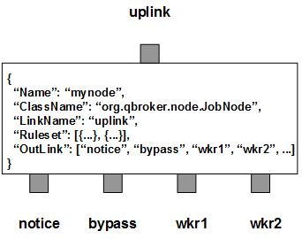

JobNode listens to an input XQueue for JMS messages as the job requests. It classifies the incoming messages into groups based on the rulesets and the content of the messages. If an incoming message does not hit any ruleset, it will be routed to the bypass outlink at once. If the message hits a bypass ruleset, it will be routed to the bypass outlink. Otherwise, JobNode dispatches the incoming message to an available worker outlink based on the priority and the threshod of the group. If there is no enough worker available, the incoming message will be cached until the required worker resource is available. Meanwhile, JobNode periodically monitors all active jobs and sends query events to their worker outlinks. When the query events are collected, JobNode will escalate them to the first outlink, notice. Once a job has completed, JobNode will collect the request message from the worker outlink and cleans up the job.
JobNode contains multiple rulesets that categorize the incoming messages into non-overlapped groups. Each group has its own priority for scheduling and the threshold for the maximum number of active jobs. JobNode also supports the dynamic threshold via the list of ActiveTime. By default, all messages in the same group are unique. But if KeyTemplate is defined in the ruleset, messages with the same key are treated as identical. JobNode will make sure only the first one of the identical messages will be scheduled. This way, JobNode is able to manage and schedule jobs for each group of messages. A group can also define its own Heartbeat and DisplayMask, as well as the a bunch of property names. Hearbeat controls how often to query the status on active jobs. DisplayMask determines whether to log the escalation messages. Property names specify what properties to be copied over to the escalation messages.
JobNode always creates an extra ruleset, nohit, for those messages not hitting any pre-defined rulesets. For nohit, there is no flow control. The nohit messages will be routed to the outlink of bypass.
You are free to choose any names for the outlinks. But JobNode always assumes the first outlink for notice, the second for bypass, and the rest for workers.
Apart from the common properties, there are two implementation specific properties for JobNode.
| Property Name | Data Type | Requirement | Description | Examples |
|---|---|---|---|---|
| Heartbeat | integer | optional | interval in sec to dispatch | 120 |
| RCField | string | optional | name of the field to store return code |
The schedule operation is executed via the pre-defined rulesets. Therefore, the configuration of the rulesets is critical to the operations of JobNode. Here are complete properties of rulesets for JobNode.
| Property Name | Data Type | Requirement | Description | Examples |
|---|---|---|---|---|
| Name | alphanumeric with no spaces | mandatory | name of the ruleset | event |
| TimeToLive | integer | optional | max number seconds for a job to be active | 36000 (default: 0 for evergreen) |
| Heartbeat | integer | optional | interval to check active jobs | 300 (default is set by the node) |
| Priority | integer | optional | prioeiry to schedule pending jobs | 120 (default: 0) |
| Threshold | integer | optional | max number of active jobs | 4 (default: 1) |
| KeyTemplate | string | optional | template for the unique keys of jobs | ##AssetID## |
| KeySubstitution | string | optional | text subsctitution for the unique key | s/^0// |
| JMSPropertyGroup | list | optional | list of pattern groups on properties to select messages | see example |
| XJMSPropertyGroup | list | optional | list of pattern groups on properties to exclude messages | see example |
| PatternGroup | list | optional | list of pattern groups on body to select messages | see example |
| XPatternGroup | list | optional | list of pattern groups on body to exclude messages | see example |
| StringProperty | map | optional | for copying properties of from the request messages to escalations | see example |
| DisplayMask | integer of 0 or 1 | optional | controling if to display the escalation messages | 1 (default: 0) |
Here is an example of JobNode:
{
"Name": "node_job",
"ClassName": "org.qbroker.node.JobNode",
"Operation": "schedule",
"LinkName": "job",
"Capacity": "512",
"DisplayMask": "0",
"Heartbeat": "30",
"Debug": "5",
"BufferSize": "8192",
"StringProperty": {
"method": "",
"Duration": ""
},
"Ruleset": [{
"Name": "express",
"JMSPropertyGroup": [{
"method": "^runJob$",
"Duration": ["[,300]"]
}],
"Priority": "650",
"Heartbeat": "120",
"Threshold": "4",
"KeyTemplat": "##method##:##Duration##",
"DisplayMask": "1"
},{
"Name": "job",
"JMSPropertyGroup": [{
"method": "^runJob$",
"Duration": "^\\d+$"
}],
"Priority": "450",
"Heartbeat": "240",
"Threshold": "2",
"KeyTemplat": "##method##:##Duration##",
"DisplayMask": "1"
}],
"OutLink": ["log", "done", {
"Name": "script1",
"Capacity": "32"
},{
"Name": "script2",
"Capacity": "32"
},{
"Name": "script3",
"Capacity": "32"
},{
"Name": "script4",
"Capacity": "32"
}]
}
where there are two rulesets with different hearteats.